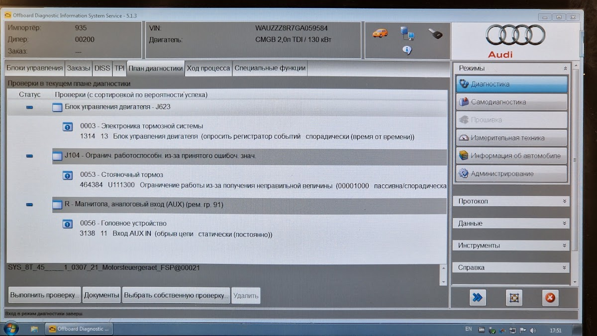
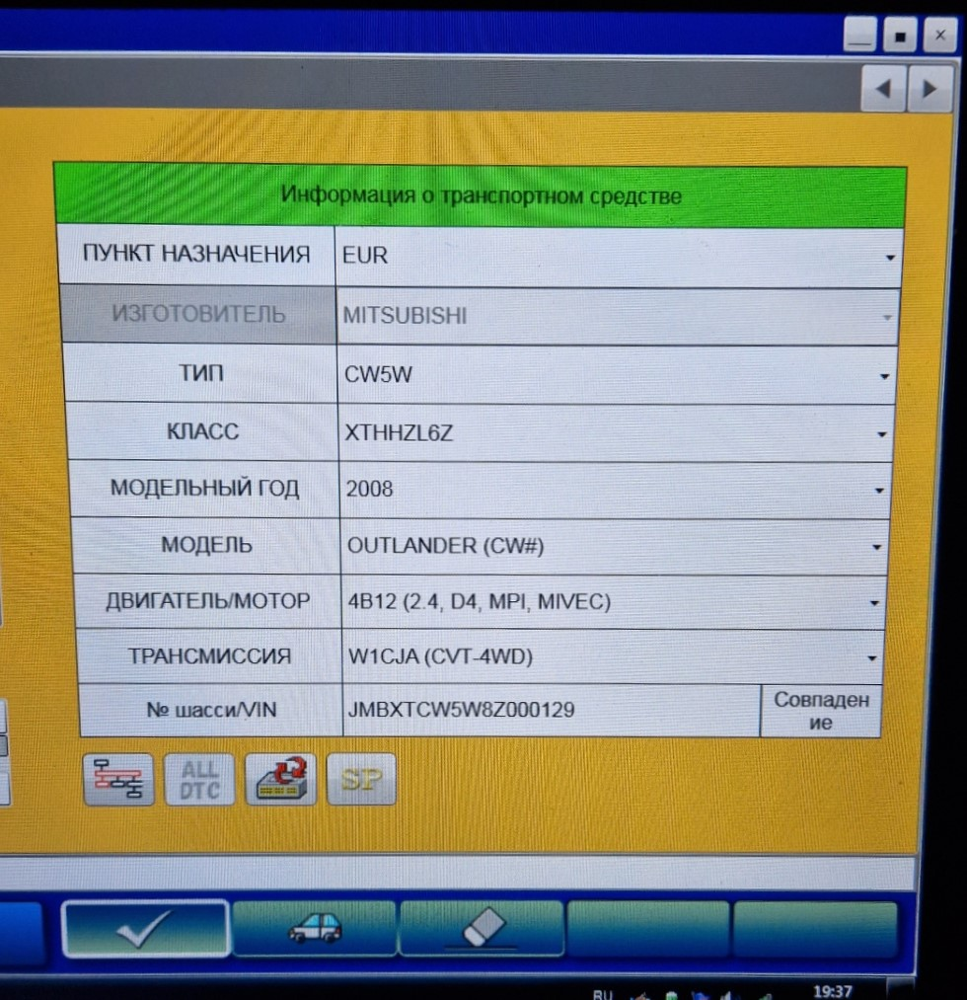
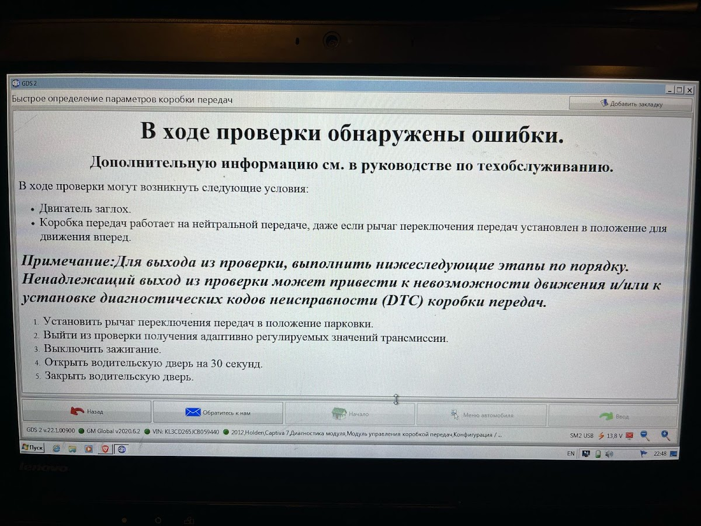
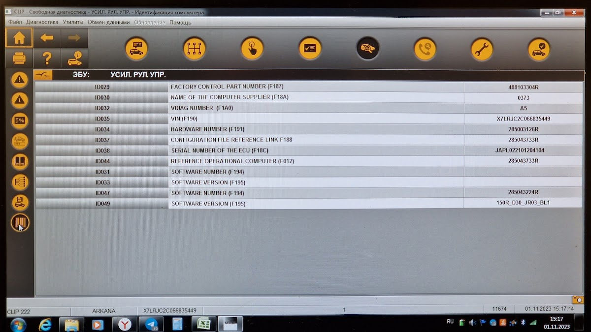
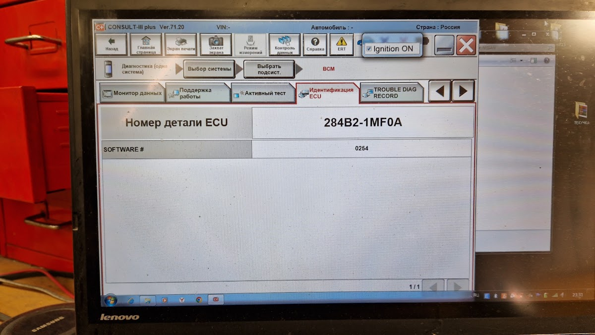

Диагностика дилерским оборудованием
Оригинальное программное обеспечение производителей — то же, что у официальных дилеров: чтение и расшифровка ошибок, адаптации, кодирование, тесты исполнительных механизмов.





- VAG ODIS
- Mercedes XENTRY
- Mitsubishi MUT-III
- GM GDS2
- Renault CLIP
- Nissan CONSULT
2 000 ₽